library(readr)
library(janitor)
library(dplyr)
library(patchwork)
library(tidyr)
library(purrr)
library(stringr)
library(ggplot2)
library(readxl)
library(seqminer)
library(conflicted)
conflicts_prefer(dplyr::filter)
conflicts_prefer(dplyr::select)
conflicts_prefer(dplyr::setdiff)
conflicts_prefer(dplyr::rename)
conflicts_prefer(dplyr::intersect)
source(here::here("code/coloc-utils.R"))
devtools::load_all("~/coloc")GWAS-eQTL colocalisation analysis
gwas_eqtl_colocs <- expand_grid(
eqtl_data_id = "QTD000356",
chr = 3:22
) |>
rowwise() |>
mutate(file = paste0(here::here("output/data/gwas-eqtl-coloc-"), chr, ".rds")) |>
mutate(data = list(read_rds(file))) |>
unnest(data)gwas_eqtl_colocs |>
select(eqtl_data_id, starts_with("PP.H4.abf"), gene_id) |>
pivot_longer(-c(eqtl_data_id, gene_id),
values_to = "pp_h4",
names_to = c("junk", "prior_type"),
names_pattern = "(.*?)_(.*)") |>
select(-junk) |>
# FIXME
filter(!is.na(pp_h4)) |>
mutate(sig_coloc = pp_h4 > 0.8) |>
count(sig_coloc, prior_type) |>
mutate(prop = n / sum(n), .by = prior_type) |>
filter(sig_coloc)# A tibble: 15 × 4
sig_coloc prior_type n prop
<lgl> <chr> <int> <dbl>
1 TRUE abc_score_eqtl 13 0.00521
2 TRUE abc_score_gwas 18 0.00721
3 TRUE eqtl_tss_eqtlgen 14 0.00531
4 TRUE eqtl_tss_gwas_tss_eqtlgen 18 0.00682
5 TRUE eqtl_tss_gwas_tss_onek1k_round_1 20 0.00758
6 TRUE eqtl_tss_onek1k_round_1 14 0.00531
7 TRUE eqtl_tss_onek1k_round_2 14 0.00531
8 TRUE eqtl_tss_onek1k_round_3 13 0.00493
9 TRUE gnocchi_eqtl 12 0.00455
10 TRUE gnocchi_gwas 13 0.00493
11 TRUE gwas_tss_eqtlgen 17 0.00644
12 TRUE gwas_tss_onek1k_round_1 18 0.00682
13 TRUE polyfun_eqtl 15 0.00601
14 TRUE polyfun_gwas 21 0.00841
15 TRUE unif 13 0.00493gwas_eqtl_colocs |>
select(eqtl_data_id, starts_with("PP.H4.abf"), gene_id) |>
ggplot(aes(PP.H4.abf_unif, PP.H4.abf_eqtl_tss_eqtlgen)) +
geom_point() +
geom_vline(xintercept = 0.8, colour = "red") +
geom_hline(yintercept = 0.8, colour = "red") +
geom_abline(colour = "black", linetype = "dotted") +
theme_bw()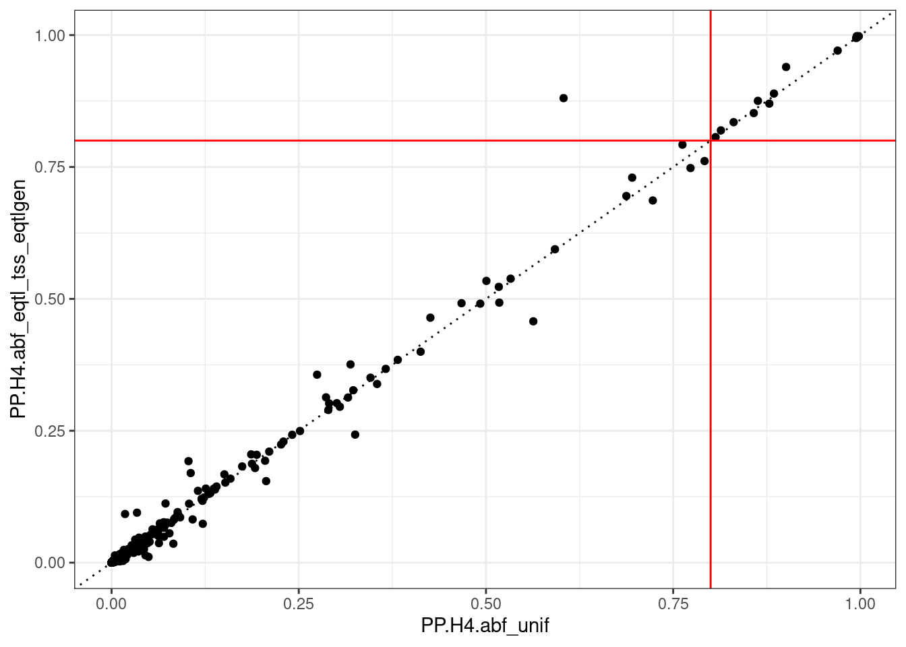
gwas_eqtl_colocs |>
select(eqtl_data_id, starts_with("PP.H4.abf"), gene_id) |>
ggplot(aes(PP.H4.abf_unif, PP.H4.abf_gwas_tss_eqtlgen)) +
geom_point() +
geom_vline(xintercept = 0.8, colour = "red") +
geom_hline(yintercept = 0.8, colour = "red") +
geom_abline(colour = "black", linetype = "dotted") +
theme_bw()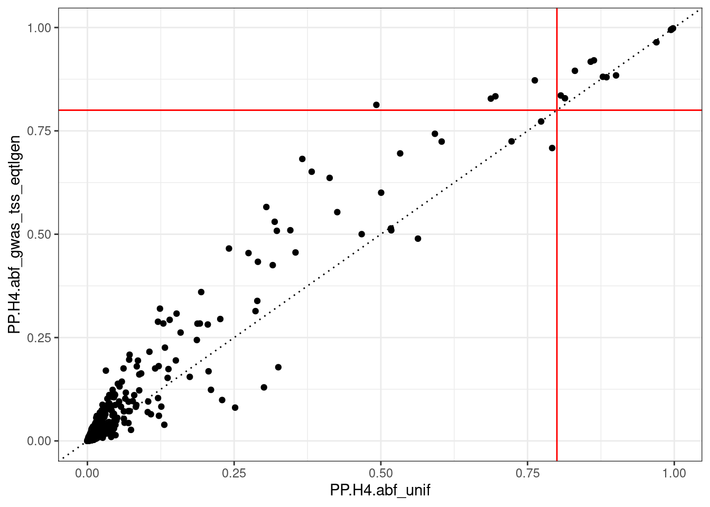
gwas_eqtl_colocs |>
select(eqtl_data_id, starts_with("PP.H4.abf"), gene_id) |>
ggplot(aes(PP.H4.abf_unif, PP.H4.abf_eqtl_tss_onek1k_round_1)) +
geom_point() +
geom_vline(xintercept = 0.8, colour = "red") +
geom_hline(yintercept = 0.8, colour = "red") +
geom_abline(colour = "black", linetype = "dotted") +
theme_bw()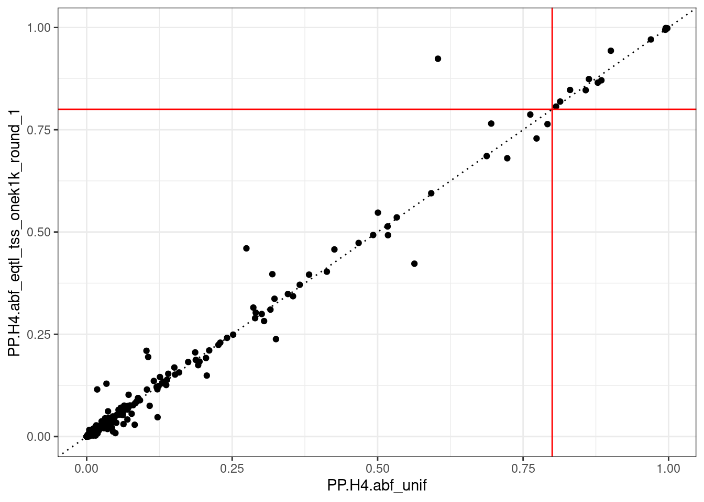
gwas_eqtl_colocs |>
select(eqtl_data_id, starts_with("PP.H4.abf"), gene_id) |>
ggplot(aes(PP.H4.abf_unif, PP.H4.abf_gwas_tss_onek1k_round_1)) +
geom_point() +
geom_vline(xintercept = 0.8, colour = "red") +
geom_hline(yintercept = 0.8, colour = "red") +
geom_abline(colour = "black", linetype = "dotted") +
theme_bw()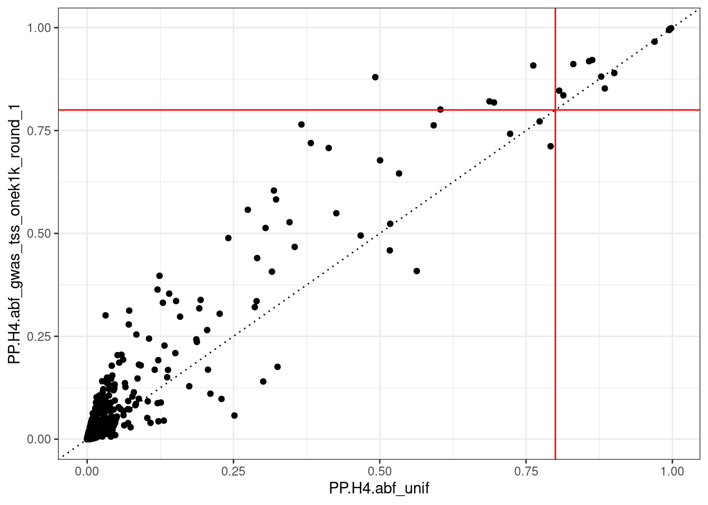
gwas_eqtl_colocs |>
select(eqtl_data_id, starts_with("PP.H4.abf"), gene_id) |>
ggplot(aes(PP.H4.abf_unif, PP.H4.abf_abc_score_eqtl)) +
geom_point() +
geom_vline(xintercept = 0.8, colour = "red") +
geom_hline(yintercept = 0.8, colour = "red") +
geom_abline(colour = "black", linetype = "dotted") +
theme_bw()Warning: Removed 143 rows containing missing values (`geom_point()`).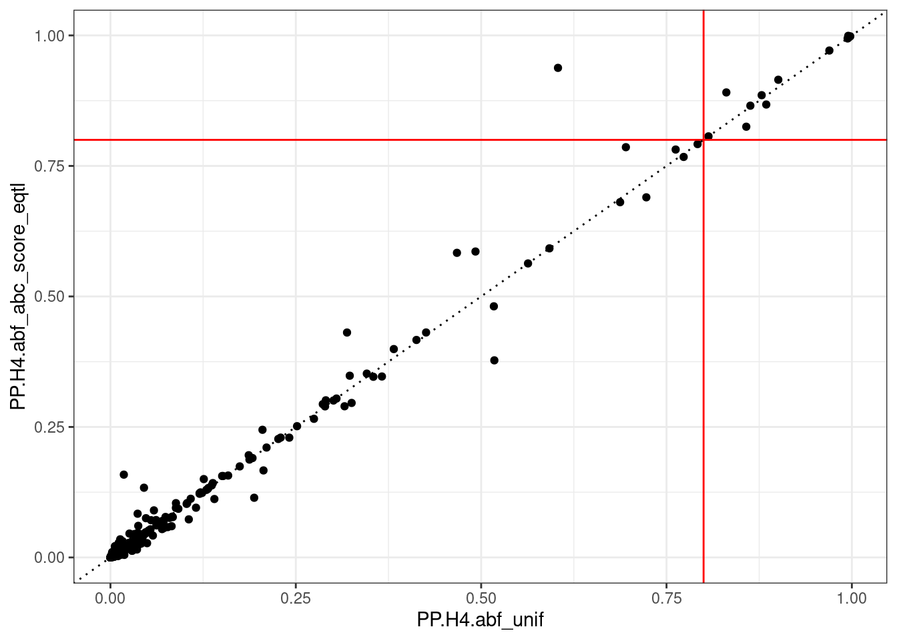
gwas_eqtl_colocs |>
select(eqtl_data_id, starts_with("PP.H4.abf"), gene_id) |>
ggplot(aes(PP.H4.abf_unif, PP.H4.abf_abc_score_gwas)) +
geom_point() +
geom_vline(xintercept = 0.8, colour = "red") +
geom_hline(yintercept = 0.8, colour = "red") +
geom_abline(colour = "black", linetype = "dotted") +
theme_bw()Warning: Removed 143 rows containing missing values (`geom_point()`).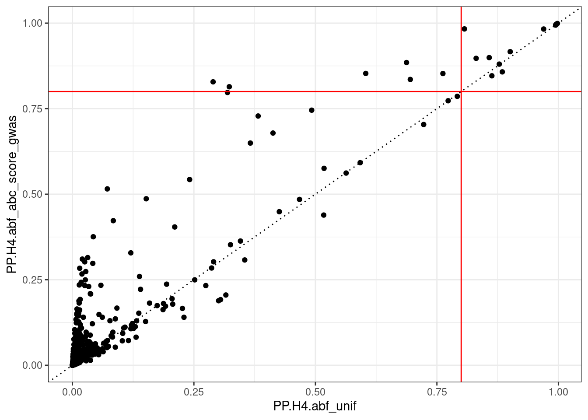
gwas_eqtl_colocs |>
select(eqtl_data_id, starts_with("PP.H4.abf"), gene_id) |>
ggplot(aes(PP.H4.abf_unif, PP.H4.abf_gnocchi_eqtl)) +
geom_point() +
geom_vline(xintercept = 0.8, colour = "red") +
geom_hline(yintercept = 0.8, colour = "red") +
geom_abline(colour = "black", linetype = "dotted") +
theme_bw()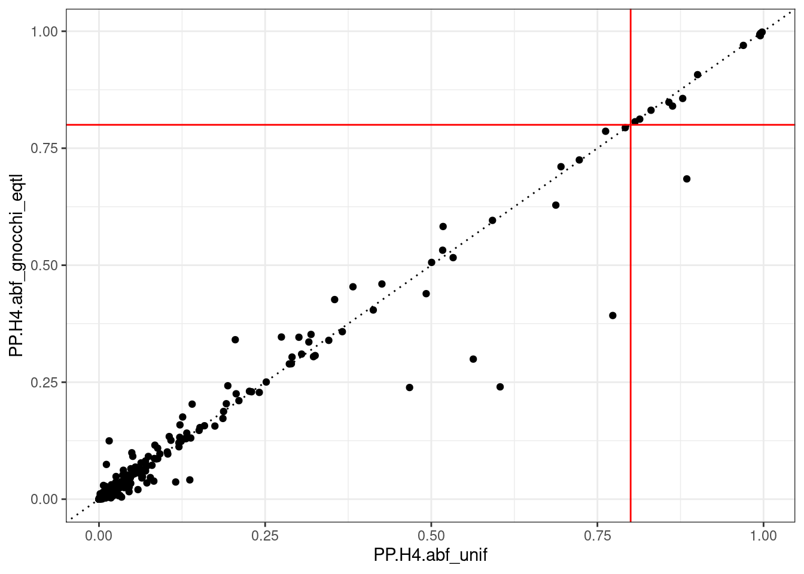
gwas_eqtl_colocs |>
select(eqtl_data_id, starts_with("PP.H4.abf"), gene_id) |>
ggplot(aes(PP.H4.abf_unif, PP.H4.abf_gnocchi_gwas)) +
geom_point() +
geom_vline(xintercept = 0.8, colour = "red") +
geom_hline(yintercept = 0.8, colour = "red") +
geom_abline(colour = "black", linetype = "dotted") +
theme_bw()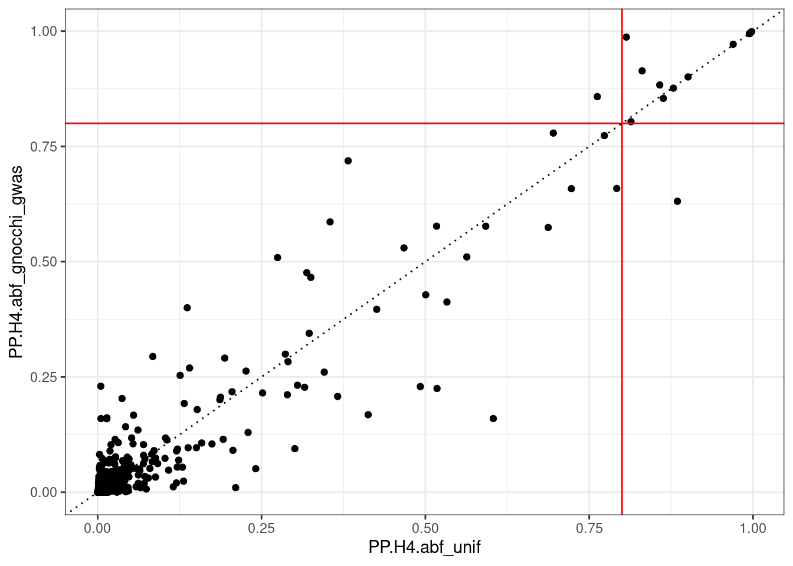
gwas_eqtl_colocs |>
select(eqtl_data_id, starts_with("PP.H4.abf"), gene_id) |>
ggplot(aes(PP.H4.abf_unif, PP.H4.abf_polyfun_eqtl)) +
geom_point() +
geom_vline(xintercept = 0.8, colour = "red") +
geom_hline(yintercept = 0.8, colour = "red") +
geom_abline(colour = "black", linetype = "dotted") +
theme_bw()Warning: Removed 143 rows containing missing values (`geom_point()`).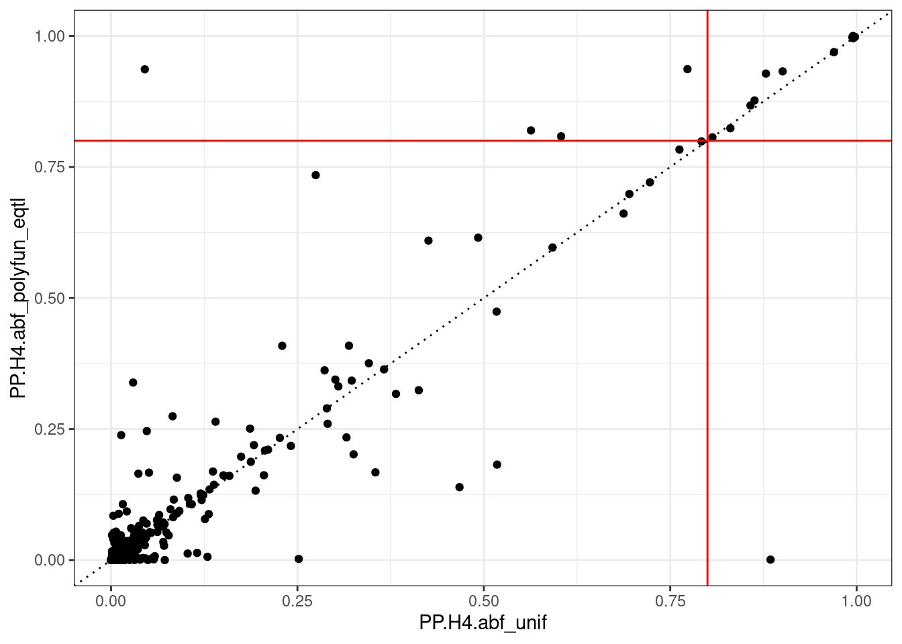
gwas_eqtl_colocs |>
select(eqtl_data_id, starts_with("PP.H4.abf"), gene_id) |>
ggplot(aes(PP.H4.abf_unif, PP.H4.abf_polyfun_gwas)) +
geom_point() +
geom_vline(xintercept = 0.8, colour = "red") +
geom_hline(yintercept = 0.8, colour = "red") +
geom_abline(colour = "black", linetype = "dotted") +
theme_bw()Warning: Removed 143 rows containing missing values (`geom_point()`).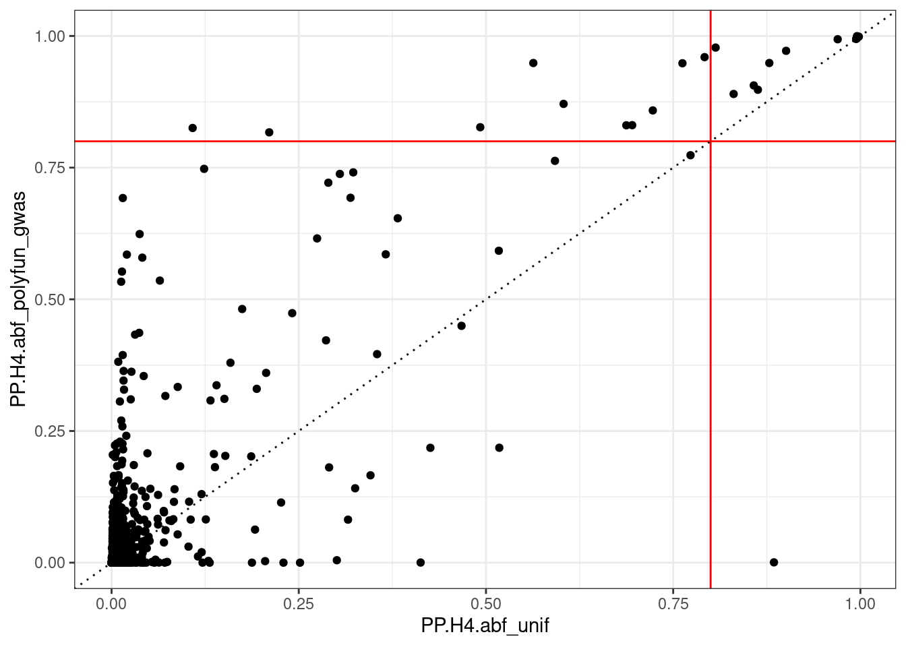
gwas_eqtl_colocs |>
mutate(
sig_gwas_tss_eqtlgen = PP.H4.abf_abc_score_gwas > 0.8,
sig_unif = PP.H4.abf_unif > 0.8
) |>
filter(sig_gwas_tss_eqtlgen != sig_unif) |>
select(region, gene_id, gene_name, PP.H4.abf_unif)# A tibble: 6 × 4
region gene_id gene_name PP.H4.abf_unif
<chr> <chr> <chr> <dbl>
1 9:34972668-35172668 ENSG00000165280 VCP 0.323
2 16:28395575-28595575 ENSG00000188603 CLN3 0.762
3 17:29494054-29694054 ENSG00000108262 GIT1 0.695
4 18:3119968-3319968 ENSG00000101605 MYOM1 0.289
5 19:18422116-18622116 ENSG00000105656 ELL 0.604
6 22:41267333-41467333 ENSG00000167074 TEF 0.687gwas_eqtl_colocs |>
mutate(
sig_gwas_tss_eqtlgen = PP.H4.abf_gwas_tss_eqtlgen > 0.8,
sig_unif = PP.H4.abf_unif > 0.8
) |>
filter(sig_gwas_tss_eqtlgen != sig_unif) |>
select(region, gene_id, gene_name, PP.H4.abf_unif, PP.H4.abf_gwas_tss_eqtlgen)# A tibble: 4 × 5
region gene_id gene_name PP.H4.abf_unif PP.H4.abf_gwas_tss_e…¹
<chr> <chr> <chr> <dbl> <dbl>
1 5:132269710-132469710 ENSG000… SLC22A5 0.492 0.813
2 16:28395575-28595575 ENSG000… CLN3 0.762 0.872
3 17:29494054-29694054 ENSG000… GIT1 0.695 0.834
4 22:41267333-41467333 ENSG000… TEF 0.687 0.828
# ℹ abbreviated name: ¹PP.H4.abf_gwas_tss_eqtlgeneQTL distance on GWAS
5:132269710-132469710, ENSG00000197375 Small signal at TSS in eQTL data, no real signal in the GWAS data. 16:28395575-28595575, ENSG00000188603 Weird ‘shelf’ effect in both GWAS and eQTL summary stats 17:29494054-29694054, ENSG00000108262 Weak evidence of colcalistion at the TSS! 22:41267333-41467333 Very weak evidence of colocalisation at the TSS..
ABC score on GWAS 18:3119968-3319968, MYOM1 (very large change) Two signals in GWAS, one in eQTL - ABC score prior favours one (!!!)
chr <- 9
all_eqtl_data <- tabix.read.table(here::here("data/eqtl-catalogue/sumstats/QTD000356.cc.tsv.gz"), paste0(chr, ":1-2147483647")) |>
as_tibble()
all_gwas_data <- tabix.read.table(here::here("data/T1D_Chiou_34012112_1-hg38.tsv.gz"), paste0(chr, ":1-2147483647")) |>
as_tibble()
eqtl_data <- all_eqtl_data |>
setNames(eqtl_catalouge_colnames) |>
filter_qtl_dataset(
trait_id = "ENSG00000165280",
chrom = 9,
start_pos = 34972668,
end_pos = 35172668
) |>
as_tibble() |>
prepare_coloc_dataset()
gwas_data <- all_gwas_data |>
rename(
rsid = SNPID,
chromosome = CHR38,
position = BP38,
beta = BETA,
se = SE,
maf = ALT_FREQ
) |>
mutate(
an = 2 * sample_size,
molecular_trait_id = "t1d",
variant = paste0("chr", chromosome, "_", position, "_", REF, "_", ALT)
) |>
select(-c(sample_size, REF, ALT)) |>
filter(chromosome == 9) |>
filter(
position >= 34972668 &
position <= 35172668
) |>
as_tibble() |>
prepare_coloc_dataset()
eqtl_data <- eqtl_data |>
filter(variant %in% gwas_data$variant)
gwas_data <- gwas_data |>
filter(variant %in% eqtl_data$variant)
eqtl_dataset <- list(
varbeta = eqtl_data$se^2,
N = eqtl_data$an / 2,
MAF = eqtl_data$maf,
type = "quant",
beta = eqtl_data$beta,
snp = eqtl_data$variant,
position = eqtl_data$position
)
gwas_dataset <- list(
varbeta = gwas_data$se^2,
N = gwas_data$an / 2,
MAF = gwas_data$maf,
type = "quant",
beta = gwas_data$beta,
snp = gwas_data$variant,
position = eqtl_data$position
)
devtools::load_all("~/coloc")ℹ Loading coloc
This is coloc version 6.0.0tss <- mean(c(34972668, 35172668))
plot_dataset(eqtl_dataset)
abline(v = tss)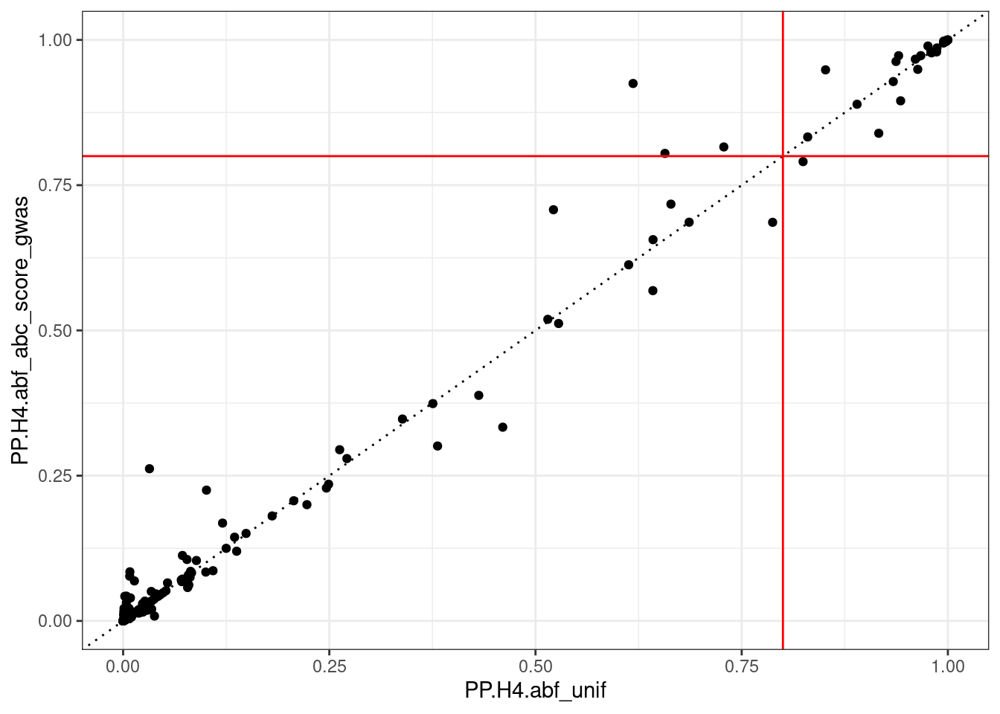
plot_dataset(gwas_dataset)
abline(v = tss)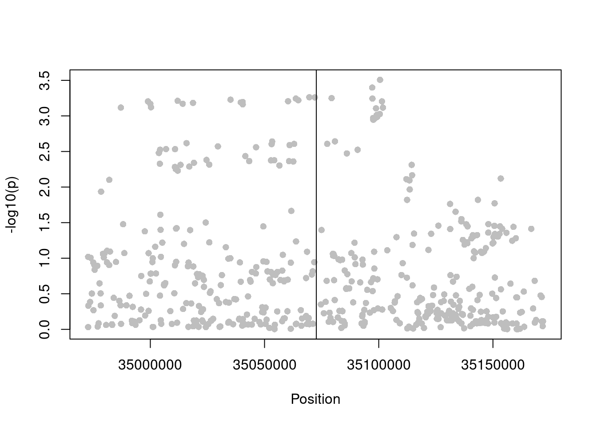
abc_score_data <- read_tsv(here::here("data/abc-data.txt.gz"),
name_repair = make_clean_names,
show_col_types = FALSE)
abc_score_prior_weights <- compute_abc_prior_weights(
eqtl_dataset$position, 9, "VCP", abc_score_data
)
plot(eqtl_dataset$position, abc_score_prior_weights)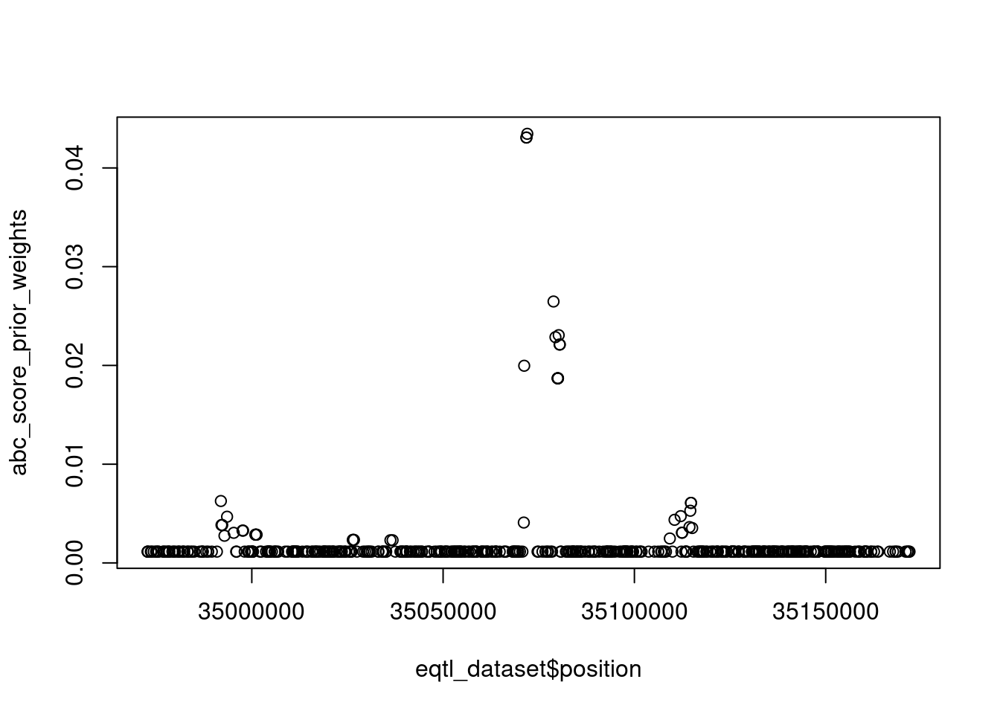
eqtlgen_density_data <- read_rds(here::here("output/densities/eqtlgen.rds"))
eqtl_prior_weights_eqtlgen <- compute_eqtl_tss_dist_prior_weights(
eqtl_dataset$position, mean(c(28595575, 28595575)), eqtlgen_density_data
)
suppressWarnings(coloc.abf(
dataset1 = eqtl_dataset,
dataset2 = gwas_dataset,
)$summary)PP.H0.abf PP.H1.abf PP.H2.abf PP.H3.abf PP.H4.abf
1.14e-11 6.58e-01 3.41e-13 1.93e-02 3.23e-01
[1] "PP abf for shared variant: 32.3%" nsnps PP.H0.abf PP.H1.abf PP.H2.abf PP.H3.abf PP.H4.abf
5.290000e+02 1.144648e-11 6.579775e-01 3.405914e-13 1.925543e-02 3.227671e-01 suppressWarnings(coloc.abf(
dataset1 = eqtl_dataset,
dataset2 = gwas_dataset,
prior_weights2 = abc_score_prior_weights
)$summary)[1] TRUE
PP.H0.abf PP.H1.abf PP.H2.abf PP.H3.abf PP.H4.abf
3.12e-12 1.80e-01 1.25e-13 6.39e-03 8.14e-01
[1] "PP abf for shared variant: 81.4%" nsnps PP.H0.abf PP.H1.abf PP.H2.abf PP.H3.abf PP.H4.abf
5.290000e+02 3.123201e-12 1.795308e-01 1.253144e-13 6.389360e-03 8.140799e-01 coloc.abf(
dataset1 = eqtl_dataset,
dataset2 = gwas_dataset,
prior_weights1 = rep(1e-4, length(eqtl_dataset$beta)),
prior_weights2 = rep(1e-4, length(gwas_dataset$beta))
)$summaryWarning in check_dataset(d = dataset2, 2): minimum p value is: 0.00031105
If this is what you expected, this is not a problem.
If this is not as small as you expected, please check you supplied var(beta) and not sd(beta) for the varbeta argument. If that's not the explanation, please check the 02_data vignette.Warning in sdY.est(d$varbeta, d$MAF, d$N): estimating sdY from maf and varbeta,
please directly supply sdY if known
Warning in sdY.est(d$varbeta, d$MAF, d$N): estimating sdY from maf and varbeta,
please directly supply sdY if known[1] FALSE
PP.H0.abf PP.H1.abf PP.H2.abf PP.H3.abf PP.H4.abf
1.14e-11 6.58e-01 3.41e-13 1.93e-02 3.23e-01
[1] "PP abf for shared variant: 32.3%" nsnps PP.H0.abf PP.H1.abf PP.H2.abf PP.H3.abf PP.H4.abf
5.290000e+02 1.144648e-11 6.579775e-01 3.405914e-13 1.925543e-02 3.227671e-01 #[1] "Region: 21:46505208-46705208"
#[1] "Gene: ENSG00000160307"
# BiocManager::install("liftOver")
# devtools::load_all("~/coloc")
#
# gnocchi_data <- read_tsv("data/gnocchi-windows.bed",
# col_names = FALSE, show_col_types = FALSE)
# colnames(gnocchi_data) <- c("chromosome", "start_pos", "end_pos", "score")
# 2 + 2
# gnocchi_data |>
# filter(chromosome == "chr21") |>
# filter(
# start_pos >= 46505208,
# end_pos <= 46705208
# )
#
# pos <- seq(46505208, 46705208, by = 500)
# chrom <- 21
# compute_gnocchi_prior_weights(pos, chrom, gnocchi_data)# devtools::load_all("~/coloc")
#
# library(rtracklayer)
# library(GenomicRanges)
# path <- system.file(package = "liftOver", "extdata", "hg38ToHg19.over.chain")
# chain <- import.chain(path)
#
# current <- tibble(chr = paste0("chr", chrom), start = pos, end = pos) |>
# makeGRangesFromDataFrame()
# seqlevelsStyle(current) <- "UCSC"
# current_19 <- liftOver(current, chain)
#
# pos_19 <- unlist(start(current_19))
#
# pos <- seq(113,871,759 - 100000, 113,871,759 + 100000, by = 1000)
# chrom <- 1
# gene_name <- "PTPN22"
# abc_data <- read_tsv("data/abc-data.txt.gz",
# name_repair = make_clean_names,
# show_col_types = FALSE)
# plot(compute_abc_prior_weights(pos, chrom, gene_name, abc_data))
# plot(compute_abc_prior_weights(seq(114414381 - 100000, 114414381 + 100000, by = 1000), chrom, gene_name, abc_data, build = "hg19"))
# plot(weights)
#
# abc_data |>
# filter(target_gene == "PTPN22")
#
#
#
# weights
# plot(weights)